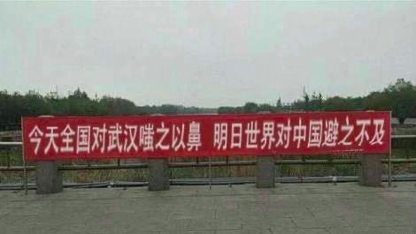
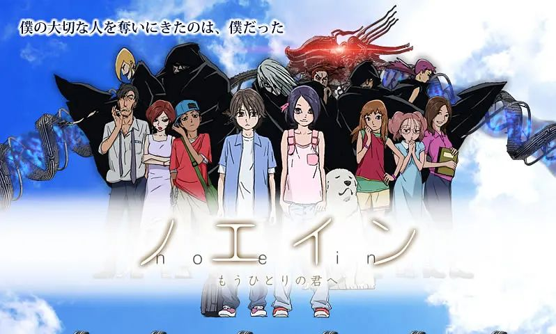
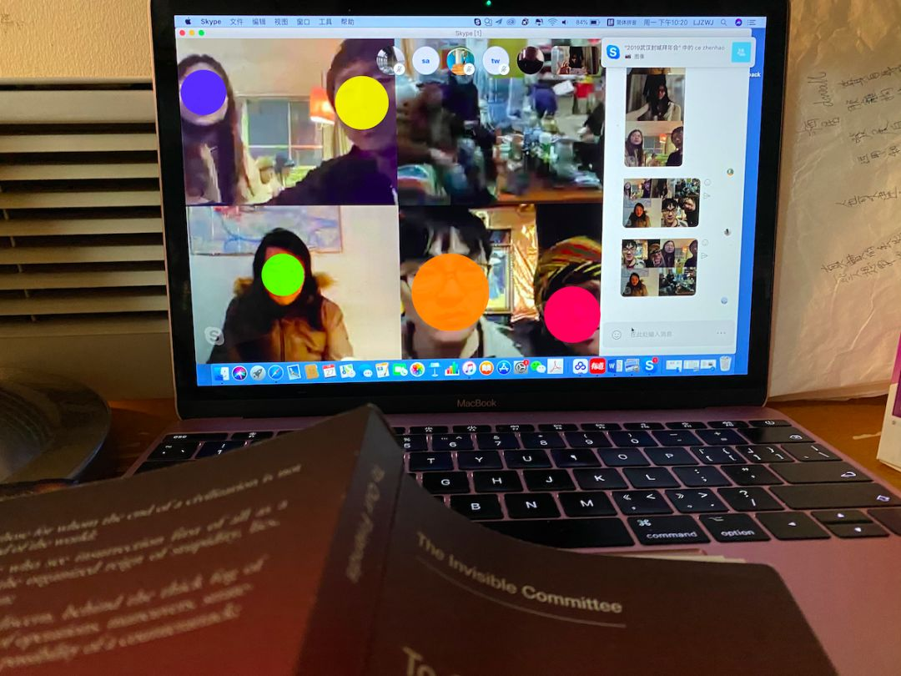
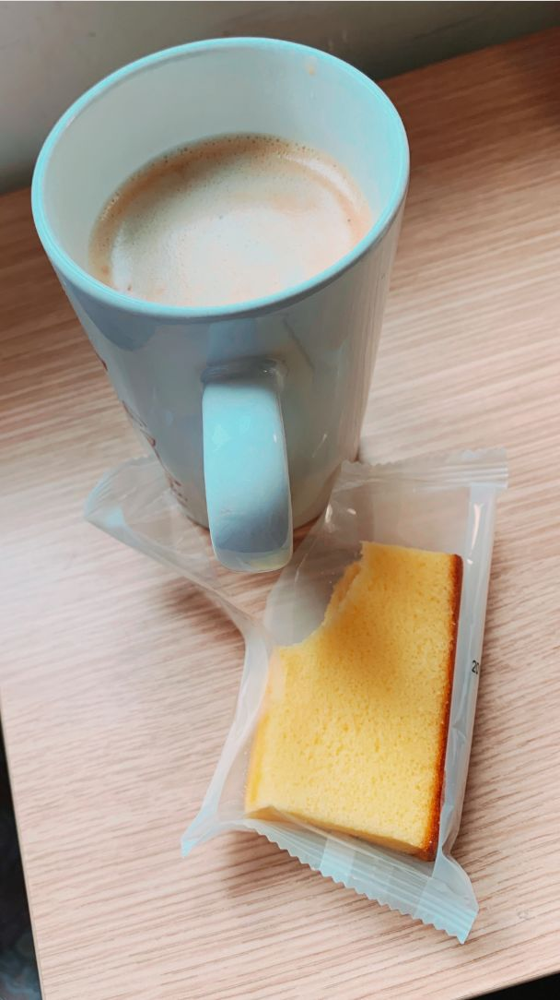
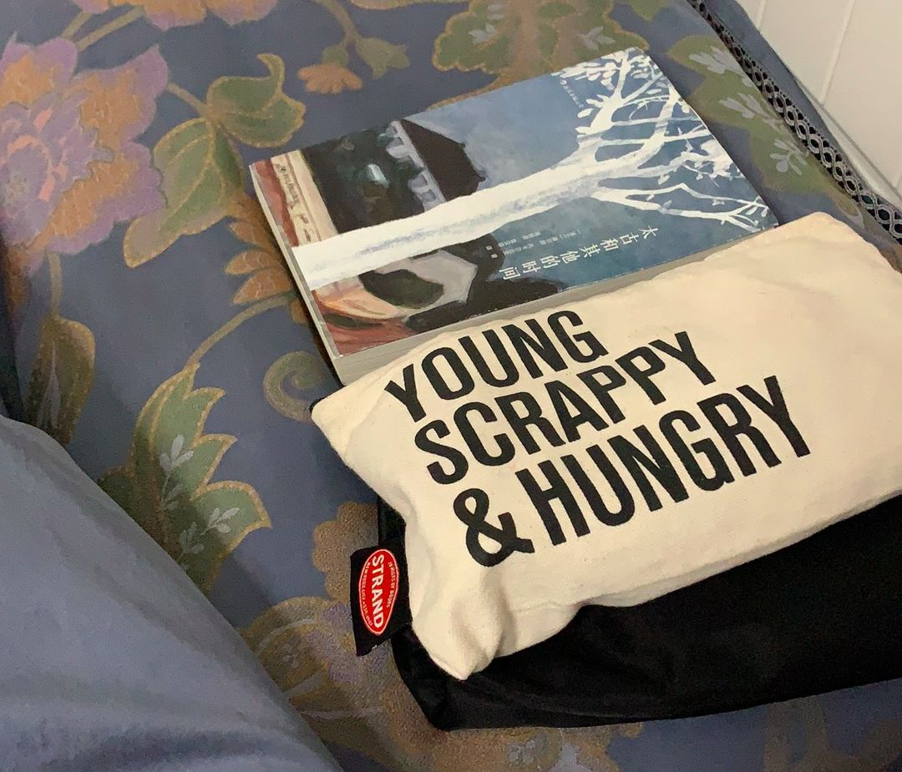

危难时刻你们怎么还关在象牙塔里丨单读
原文链接 备份链接 在武汉一线奔波的外卖员张赛继续向单读发来他的近况。疫情形势依旧严峻，对病毒的认识也众说纷纭，这既让他紧张，也让他感到困惑——为什么学者不走出理论，多说说社会上的事，为什么医生不多写写科普文章，录几段视频，接受采访也 …


年前，我把手里剩下的工作赶了赶，提前几天就坐上了回家的高铁。像往常一样，我打算利用离开北京的这段时间，反思和整理一下自己，以便准备充分地迎接春天。坐在列车的座位上，许多关于 “明年” 的想法在脑中涌现，我有些兴奋，拿出笔，试图把它们理顺。想不到的是，这张纸上记录的文字在两天之后就显得不合时宜甚至可笑了。
关于灾难的消息到来的方式也是灾难式的。我被卷进了信息的漩涡里，停不下来，情绪被屏幕控制着，对世界和自我的疑问纠缠在一起。“____ 到底有什么意义？” 这句话换着主语不断进入我的意识层面，我发现自己能做的事情竟都如此没用，我不知道当下该做什么，甚至不知道应该怎么开始这一年了。
强制自己放下手机之后，理智才开始慢慢复苏，几乎被全盘否定了的自我又开始慢慢得到一些正名。我尝试回到正常的生活里，疫情面前我帮不上忙，但几近停摆的城市不需要又一个停摆的个体。我第一次明白经历灾难或许才是人生的默认状态，该做的是带着脑子和勇气去度过它。我逐渐开始跟周围的朋友交流这段时间的想法，我看到大家也在混乱中努力抛出自己的锚，让自己稳住，这也给了我鼓励。
灾难面前，个体的力量很小，但我们至少还可以思考。而这一件事情当中恰有太多的事情需要我们去思考，然后才能记住，才能修补，才能进步，才能或许抵御下一次灾难。我们向艺术行业内的年轻朋友们发出邀请（因为艺术是多么的 “没用”，也因为他们是我所认识的最爱思考的一群人），听听他们在过去两周的心路历程，对疫情，对自己的思考。几位受访者都提到了连结的力量，我们也希望能连结更多的人，希望更多的人愿意去观察、体会和反思，并坚定自己所要做的事。
当下，我们还不知道疫情什么时候会被控制住，我们惦念着疫情影响中的人，这是混沌中的思考，一段时间之后，它也许还会继续变化。
艺术家
过去的两周好像过山车一样。两周前参加香港大馆的 Booked 艺术书展，也和机构的工作人员碰面确认下一个展览。流感时节，过关的时候两边的职员都已经戴上口罩了，电梯也蒙上塑料膜开始消毒程序。因为早前在新闻上了解到了流感大爆发，为了预防流感我也提前戴上了口罩。没想到防流感的口罩用到了后来。
因为疫情，过年没回家，一开始的时候叫家人做好防护措施，但没人听， 感到无力。
最近的日常就是在不停刷新闻，卷入了信息的漩涡。最多的一天我发了 36 条朋友圈。尽管如此，还是感受到信息作为资源它的分配是那么不均等。幸好家旁边有山，在几乎无人的山里，水库边观察水的纹路，风里听虫和鸟的语言。后来，误入了一道废弃的封锁线，在阳光慷慨抛洒自己的山间美景之中我最怕的竟然是人。
 广州南沙的山，图片由覃小诗提供
广州南沙的山，图片由覃小诗提供
这种大家一起失眠，感觉很累，充满无力感，一起哭泣的时刻经历了好几次，每一次我都从中学到了新的东西。我现在一愤怒就去工作。如果感到无力，可以做些简单自己动手力所能及的事情，制作一个物件，P 个图，画个画，做个饭。看到各地武汉人被封门的时候，我做了个虚拟横幅 “今天全国对武汉嗤之以鼻，明日世界对中国避之不及”，希望不要有歧视，大家都是普通人，不容易。那时，WHO 还没宣布进入 PHEIC，后来这个明日就到来了。
覃小诗制作的虚拟横幅
这些年想到艺术到底有什么用的时候太多。前些年学校发动全校建立了基因药物的特别工作组，有各理科工科以及法律哲学系，唯独没有艺术。但后来班上同学 Emma Sulkowics 为强奸事件站出来，扛着床垫来上课的时候， 我又觉得艺术作用很大。因为我清楚地记得在本科遇到同样事情的同学站出来的时候如何沦为笑柄。
前年还问过一个艺术家，战争的时候还会有艺术吗？他说，有，但不是我们现在看到的这种。而最近一次问这个问题在不久之前，朋友给出了各种充满希望的答案，于是眼泪掉进酒里。去年参加的一个奖项，认识了不少艺术家朋友，可怕的是，我们的作品就像预言一样，一个接一个地应验了。
覃小诗推荐的精神食量：
《Noein - 到另一个你的身边去》，图片来自网络
陈逸云
艺术家
别的：过去的两周你在哪里？是如何度过的？
陈逸云：我从常住的上海回到厦门的家过年。年前的大部分时间精力，都花在向父母家人说明，疫情是真实的，防护的意识与措施是必要的。我的说明动用了平常与他们沟通用的数据和现象，还有我鲜少使用的音量和眼泪。我意识到家人接收信息渠道与我的差异，是他们不相信事实是事实的原因。后来我发现这种信息的不可达性在整个疫情的大面积传播中，都成为了事情的关键。而音量与眼泪，也成了整个疫情中让个体被看见的必要方式之一。
 陈逸云在老家的临时办公桌
陈逸云在老家的临时办公桌
这段时间里，你在社交网络上查看信息或者发布信息吗？
我一直在看信息。可能因为我之前在医院和研究室短暂实习过，对病情本身有一些训练过的冷静。虽然难受，但直视和承认疾病是必须的，直视才能去解决，病本身不可怕。但这次疫情当中，关于疾病以外的事情太多了，我很困惑，还在努力理解每一层信息。
从疫情爆发至今，整个事件中，给你最大感触的是什么？
这次的疫情（或者说所有的疾病），分为疾病本身和与人性、社会相关的部分。
我对病毒本身不是很恐惧。疾病本身是单纯的，疾病-研究-诊断-治疗-预防，现代医疗有丰富的经验，可以建立起明确的标准、流程，就能够清晰地执行，确保大部分人大概率的安全。我本来以为这次传染病也是这样，可以专业而清晰。
而疾病复杂的原因在于它紧紧和人性与社会交缠，交织了身体的疾病和社会的疾病。我对这些本不算太陌生，过去几年做的项目都跟疾病话题相关：疾病中的人，疾病者和弱者的社会地位和社会关联。在这些项目里，因为和疾病共情，会连接到生命力的弱，连接身处社会边缘的暗淡，让我感觉自己也可能一同陷入衰败渺小中。可能这次疫情里好多人也会有类似的感受，突然共情大量苦难的人。
而我一直企图去理解这种残忍是生命自然本身的残忍，还是社会人工的残忍？想指出疾病者的弱除了疾病天然的弱，更是人工加之的本无必要的弱。这种裹挟让疾病、疾病者真正弱了下去。我最关心的还是这些被外力弱化的病人们。
但这次疫情，有很多原本我以为跟疾病整个话题没有关系的事情，令我感到陌生，需要重建认知，它们好像在这次疫情中尤其成为了社会疾病的病因。我意识到除了我所关注的病人们之外，我们每个人都可能成为被外力弱化的人们，这是新的感触。
作为一名艺术从业者，你怀疑过自己的价值吗？
我以为不做项目的时候可以透透气，没想到，项目里的那些状态在最近的疫情里又都大面积活生生地出现着，让人不得不直视。
这次看到这些数量庞大的病人和相关个体，不是在我亲自待过的医院、养老院、研究所、实验室；也不在我亲自经历过的家里、朋友家里。而是在貌似安全平静的非疫区小城，妈妈铺的香香的碎花床单上，从小的屏幕里看到大量活生生的苦难的人。
他们大部分离我远得很，跟我没有直接关系，只要自我隔离，我就是安全的。只要关掉小屏幕，他们就会消失。就算音量突然被一下一下按到了最大，还是可以选择一键消音。我做与疾病相关的项目的方式，好像就是小心小声地按着音量增大键，在到达令人想静音的音量之前克制住。我老是试图去用轻巧的方式去做，加一点幽默，撒一点俏皮，不想使用大音量，更不想自大而投机地使用眼泪。我也试图抽离地去做，用抽离去避免伤害本来很中性的疾病和疾病者。
但我惭愧于我做得还不够好，表达得还不够好，因而缺乏力量。怀疑轻巧是不是一种避重就轻、故作若无其事，怀疑抽离是不是瞄不准靶心，让人无法识别。尤其在与疾病零时差近距离相处的此时和当时，处理项目所用的所谓俏皮似乎也令我感到难堪。
我质疑过艺术是不是真正有力迅速强大的方式，今天这个质疑依然存在，因此我还在摸索着。所幸疫情也让我确认做项目的意愿，讨论疾病和牵扯它的外力是必要的。想做的事情依然是坚定的，让病不成为弱化人的原因，让有病的人不必羞耻。
本来说要聊这些的时候，我说我非常沮丧，觉得自己做的于事无补。但聊完我想我还是要给自己和所有坚持在各个议题中一下一下试着按大音量的人一些 credits。虽然难受，一团糟，但承认弱存在，承认病存在，试验病因，理清病理，寻找治疗方案，执行，对人的病对社会的病都是一样的，可以专业。身体本身不是好没用的身体，人们也不是好没用的人，甚至艺术都不是好没用的艺术。我也不是好没用的我，我得要知道这点。
李佳
策展人，写作者
我的手机程序显示，过去的两周我的屏幕使用时间分别上升了 37% 和 13%，每天差不多有 6-8 个小时花在这里。即便除去阅读电子书、看视频的时间，在我记忆中从没有像这两周这样如同强迫症般一遍遍刷新各种社交媒体和新闻平台。我发现身边很多朋友也是一样，群里大家的活跃时间不再像以前一样在一天中正向分布，现在，甚至是半夜 ，还会有新的发言，讨论。
灾难改变了生活中哪怕最微小的部分，它也让我通过这些微小事物看到正在涌现的某种巨大轮廓。忽然，我们似乎生活在一个真正的共同体里面了。一个个体的情感起落，现实境遇，行动及其后果，通过一块小小的屏幕，被毫无阻滞的投射、印证，在个体和个体之间一种共振在汇聚。不仅在悲痛中，也在笑声中：从没有一个时刻，网络段子被如此广泛的流传，每个人都能读懂它，都能看到自己，这是一种共同的笑声，它的音量同悲恸的哭喊一样巨大：所有人都在其中，找到相似的期待，情感，伦理的驱力……我们的手指不仅仅是在一条条信息的微光中滑动，我们是在追寻着其他人，其他的个体，和他们一起……
李佳在过去两周内的日常
然而其实我并没有关于公民社会的乐观预期，我只是想确认这个共同的平面已经在我的生活中发生了意义，不是需要思考获知的意义，而是在笑声和泪水中升起的意义。确实，它给了一个我想要的答案，而这个答案不是早就在哪儿吗？过去一年中，为了说服艺术家也是说服自己，我到处引用马奈的一句话：展览的意义在于寻找我们的盟友。为了寻找和挽住盟友的手，我们在高压下工作着，并且因为这高压而不断怀疑着自己的工作，甚至因此陷入孤独，和自否。
我想讲一个我自己的例子：在疫情尚未在官方的口径中 “正式” 爆发的时候，因为一件艺术圈同仁或多或少都曾经历的事儿，我进入了一种政治抑郁。我一天可以躺 25 个小时，甚至 26 个，感受疼痛、愤怒和屈辱感如何随着血液流遍全身。这种系统暴力的结果，是让我确认自己是一个被折辱和掌掴的个体，而我的痛苦也来自我的自我审视：作为一个从业者，我 “太嫩了”，或者，作为一个个体，我的心理素质和抗压能力 “偏低”……
直到有一天，“武汉”以及这个词背后无数个体，甚至是所有个体的遭遇，命运，悲剧，以及所有个体所交汇而成的悲恸与愤怒的海洋……它切开了我作为个体的表皮，在巨流的冲刷之下，我好像重新看到了一个艺术之可能性的边界，不是个体的边界而是个体边界的敞开，它让我意识到关于人的话语并不屈服于时代的贫瘠，有些东西会不断回来，而我们工作的意义，是为之提前操练和准备，以便我们可以再次一起……
李佳推荐的精神食量：
 图片来自李佳
图片来自李佳
龙星如
策展人，写作者
过去的两周你在哪里？是如何度过的？
几乎没有出门，情绪状态有点像学游泳。某些时候在溺水式挣扎，某些时候能浮出水面重组自己的状态。不断尝试回到自己的常态，不断被荒诞 beat up。跟朋友聊天，感受到了互相帮助校准锚点，彼此鼓励的重要性。
龙星如的日常
这段时间里，你在社交网络上查看信息或者发布信息吗？
看，但很少发布，觉得有必要分享的，信度较高的消息会转。十分矛盾的感受，一方面觉得在这样的事件下，积极参与对信息的甄别和传递，是有必要的行动（也真的看到很多身边媒体人进行令人钦佩的工作），但另一方面，也会让自己不要掉进信息的涡轮里被带着团团转。以上指的是关于 “疾病” 的状态的信息，而关于 “人” 的报道，我认为它们极其宝贵。
去年看到托卡尔丘克演讲里的一句话，对我影响挺深的：“世界是我们每天在信息、讨论、电影、书籍、流言蜚语和小轶事的织布机上编织的织物。今天，这些织布机的范围是巨大的 —— 感谢互联网，几乎每个人都可以参与这个过程，或承担责任或不，或带着爱意或满怀恨感，或好或坏。” —— 感谢这织布机范围的巨大，它让一针一线都有迹可循，它内在的流淌和阻抗足够丰富时，不太容易往一个方向一去不返。
有没有做些什么让自己不要失衡？
每日翻译纽约新美术馆的《Net Art Anthology》（《网络艺术选集》），这是今年的工作之一。
花了很多时间想象不着边际的东西，去了很多脑海中的飞地。没有主动去为了不失衡而做什么，但确实客观因为原来很急的 deadline 突然都不那么急了，有机会更慢地做一些事情。（但很显然，情绪起伏也很大……）
在自己的小公众号偶尔分享阅读的摘抄，或许人们看到时会暂时跳脱一下。
从疫情爆发至今，整个事件中，给你最大感触的是什么？
我原本的答案是：“要有置身其中的能力。” 现在看这个答案真是不痛不痒，或许应该追问：“何为置身其中？” 人减少了流动，信息疯狂流动。窗外能看到快递还在运送，北京连续下了两天大雪。信息空间的音量大小仿佛可以选择。关掉窗户，便仿佛不置身雪中；关掉屏幕，便仿佛不置身焦灼世界；我忍不住设想，某一天这些“开关”都将不复存在。“置身其中” 可能从来不是个体的，是所有人的。
作为一名艺术从业者，你怀疑过自己的价值吗？现在找到一个给自己的答案了吗？
一直觉得 “艺术” 是内在性格/价值，或者说一种状态，这个状态跟周遭环境不是必然相关的。这种广义的 “艺术”，也包含了应对和化解（自我化解）灾难的能力，但这个效用并不是当下发生的。现在如果去创作回应 “疫情” 的作品，一定会被骂蹭热点吧，想要回应现实是人的自然冲动，但现在很多事物周期太短太短，情境不太一样。其实那些过去留下来的关于瘟疫，战争和灾难的创作，确实提供了一种视角 —— 我们对过去的知识，有一部分就是由 “艺术” 所保存下来的，这个功能不是现下 “解药”，更像是后置存档。
“艺术从业” 应该指的是更为实际的生存和工作模式 —— 那么，自我怀疑这个简直占了我人生的大头，本就长期怀疑自己做的事情是不是根本没什么用。虽然嘴上说着不要太纠结 “有用” / “有意义”，但在现在的局面中（尤其是看到自己以前的同学作为媒体人冲在前线时），真的会觉得自己超级没用。
阶段性的答案，引用那天一位朋友对我说的吧：“不要放弃精神生命。” 精神生命不是岁月静好，它应该包含了对美，祥和，灵光，灾难，纠缠，混乱和痛苦的认识，对更深层次的诸相的观看，客观来说这种停摆也有点当头一棒的感觉 —— 会逼我去追问，什么是 “无论发生什么也想要去做的事情”。我相信有很多东西对世界的贡献和对人的宽慰/启发是长久的，要找到它，而且无论发生什么也要去找到它。
并不知道这个局面会持续多久，但我比较相信，在这个阶段我选择去思考/做的事情，大概率就是 “无论发生什么也想要去做的事情” 的一部分了。
最后可以推荐一些精神食粮吗？
奥尔加·托卡尔丘克的《太古和其他的时间》。
图片由龙星如提供
杨圆圆
艺术家
过去的两周你在哪里？是如何度过的？
杨圆圆：一直在北京，除夕那天和家人相聚了一次，之后基本都一个人在家与猫共渡。
如今，觉得除夕的记忆画面无比遥远：那个白天，在长安街经过一片死寂的广场；晚上，春晚的虚假祥和与手机上的灾情报道折射出这个国家的平行现实，身心感到一种强烈的撕裂，于是干脆打开第三个荧幕，看韩国灾难片《流感》。而在之后的两周里，这种撕裂感蔓延在每一天的日常中。
 杨圆圆的两个屏幕
杨圆圆的两个屏幕
这段时间里，你在社交网络上查看信息或者发布信息吗？
当然，会同时看国内新闻与国外新闻，虽然在最初几天觉得快精分了，被信息撕裂，也被情绪撕裂。后来几天平缓了一些。面对铺天盖地的信息，首先要对信息作出判断与过滤，保持清醒客观的头脑。
除了查看，也有发布、捐款、与分享多类信息。在官方的信息管控下，个体间的信息分享尤为重要。前几天看到一段文字提到 “历史信息的区块链” 的概念，觉得想再分享一下 —— “既然所有人所有人都在经历历史，那么所有人都可以记录历史……拍摄，分享，传递。历史是很容易被篡改的，但如果全民都在记录，全民都在传递，这就是历史信息的区块链，再没那么容易被篡改。”
另一方面，四O四 来得越来越快，及时随手存档也尤为重要。未来记忆的档案库，是每一个个体共同积累的。
有没有做些什么让自己不要失衡？
承受不了的时候就逃到电影的世界里，这几天看了不少灾难题材的片子。推荐《传染病》（Contagion），片中故事仿佛此刻现实的镜像，我喜欢影片多条个体叙事的结构，没有主角（或者，主角实际是看不见的病毒）。
最近每天都做饭，做饭也能让我平静（从没料到我也有说出这种话的一天！）。
与此同时，几天前就开始恢复工作了，在同时弄两个片子，在如此糟糕的 2020 年，看 2019 年的素材可以续我的命。
从疫情爆发至今，整个事件中，给你最大感触的是什么？
苦难如同魔镜，照出乱世的本相。疫情如同抽水机，池中温水被迅速抽干了，许多人才惊觉池中现实的阴暗。
但另一方面，也深切觉得在黑暗中看到了凝聚的光芒，越来越多的人在彼此联结了。小的阵营在逐渐扩大。希望经历这一次的灾难，能唤起一批人的觉醒。希望我们都不会忘记。
作为一名艺术从业者，你怀疑过自己的价值吗？
我会怀疑许多事，包括 “价值”（value）一词。坦白说我没想过这个问题，只是一直在进行创作的动作。我相信艺术最大的意义是去建立联结 —— 跨越地域，跨越时间。而围绕这一点的思考，也一直渗透在我的每件作品当中。想到今天看到一句海明威说过的话，“每个人都是一个碎片，那广袤大陆上的一部分。” 在过去几年来，世界各地局部的分裂越发加速。但无论政治如何割裂，人类在天灾面前都一样渺小与无助。面对现实，艺术没有什么实际作用。但好的艺术应该像是棱镜，让人重新审视现实，感到希望，或激发自省。
最后可以推荐一些精神食粮吗？
推荐重温李安的《饮食男女》，可治愈，可有效促进居家修炼厨艺。与此同时推荐《传染病》，可谓以毒攻毒。
 图片来自网络
图片来自网络
// 编辑：陆冉

原文链接 备份链接 在武汉一线奔波的外卖员张赛继续向单读发来他的近况。疫情形势依旧严峻，对病毒的认识也众说纷纭，这既让他紧张，也让他感到困惑——为什么学者不走出理论，多说说社会上的事，为什么医生不多写写科普文章，录几段视频，接受采访也 …
原文链接 备份链接 在接受媒体采访时，被问及康复后有什么计划，李文亮说：“恢复以后还是要上一线，疫情还在扩散，不想当逃兵！至于疫情以后的事，还没想太多。” 全文2071字，阅读约需4分钟 2月7日凌晨，武汉中心医院官方微博发布消息：我院 …
原文链接 备份链接 这是疫情信息笼罩的第三周。疫区之外，很多人足不出户，长时间坐在电脑前。屏幕里是层出不穷的求助，家破人亡的悲剧，一出又一出的荒诞和不义。线上线下的割裂感让人无法心安理得地享受自己现有的安全。除了让自己沉浸在悲伤、愤怒和强 …
原文链接 备份链接 她反复确认我们工作人员的身份，就是不提供自己的信息，打了几次后来就不接了。 口述 | 郭翔 整理 | 王仲昀 我是上海市疾控中心的一名工作人员，原来在免疫规划所工作。新冠肺炎暴发后，中心成立了“追踪办”，我和另外23 …
原文链接 备份链接 **抗疫时期的中国舆论场继续展示着复杂性，并且是以一种更加被凝视的方式。 ** 除夕当夜极大的情绪压力释放之后，从第二天（1月25日）开始，整体舆论场趋向稳定和积极：“第一舆论场”的焦点在于可控的整体局面，积极的防疫行 …